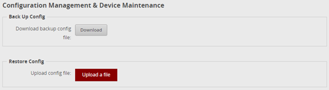
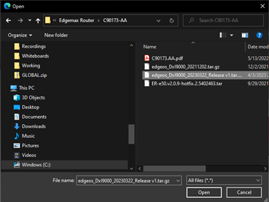
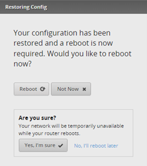

Configuring the EdgeMax Router
This topic includes information about how to configure the EdgeMax router.
Note: To troubleshoot the EdgeMax Router, see the Remote Solutions Service Manual for more information.
| Table of Contents |
|---|
| When to Perform |
| Prerequisites |
| Uploading a Configuration File |
When to Perform
You should only perform this procedure when you need to reset the router to the default configuration.
Caution: Resetting the router to the default configuration will overwrite existing connections. Before you reset the router to the default configuration, take note of existing configurations and port assignments, if present.
Prerequisites
Obtain the router configuration file, which has a
tar.gz file extension, from
Box\Service Documentation - Dx\Immunoassay\DxI 9000\Software\EdgeMAX.
Note: The file(s) may be located elsewhere (i.e. as dictated by Mod 12881 - Edgemax Router - Update Settings).
Uploading a Configuration File
Perform the following steps to reset the EdgeMax router to the default configuration or to load a new configuration.
Caution: Resetting the router to the default configuration will overwrite existing connections. Before you reset the router to the default configuration, take note of existing configurations and port assignments, if present.
Caution: The router has a "Reset" button, but DO NOT use this button, because it will reset both the router configuration and the software, and you will need to perform additional troubleshooting steps to return the router to a functional state. See router Mod 12881 for instructions about how to load new firmware, if necessary.
- Access the EdgeMax router dashboard. See Accessing the EdgeMax Router Dashboard for more information.
- Select System at the bottom of the dashboard.
- Back up the existing configuration. In the
Configuration Management & Device Maintenance section, select
Download to download the current router configuration file, with a
tar.gz file extension, to the
Downloads folder on the PC. Copy the
tar.gz file to an alternate location, if desired.

- Load the new configuration:
- In the
Configuration Management & Device Maintenance section, select
Upload a file to open a File Explorer dialog.

- Select the new router configuration file and select
Open.
Note: The location of the file will depend on whether you are accessing the router dashboard via the DxI 9000 console or using a service laptop.The Restoring Config dialog will be displayed with the notification and question, Your configuration has been restored and a reboot is now required. Would you like to reboot now?

- Select Reboot.
- Select
Yes, I'm sure to reboot the router.
Note: This step will interrupt communication with connected devices until the router has restarted.
- Refresh the browser window.
- Log in to the router dashboard again.
- Perform the following procedures to configure connections, as applicable.
- Back up the new configuration. In the
Configuration Management & Device Maintenance section, select
Download to download the current router configuration file, with a
tar.gz file extension, to the
Downloads folder on the PC. Copy the
tar.gz file to the
D:\Backup folder of the system and make an external copy, as needed.
- In the
Configuration Management & Device Maintenance section, select
Upload a file to open a File Explorer dialog.